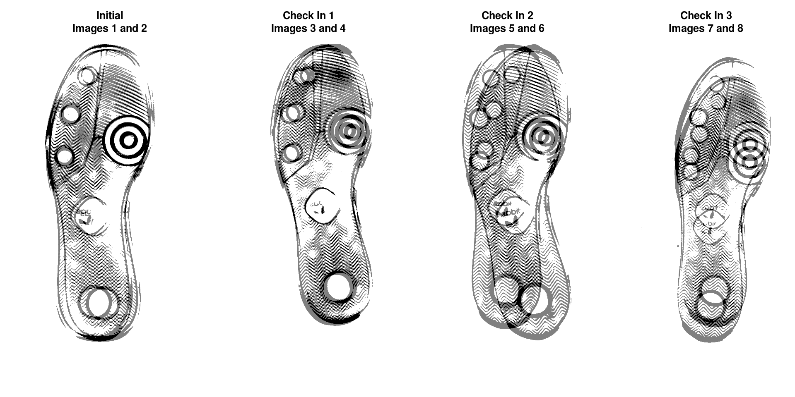
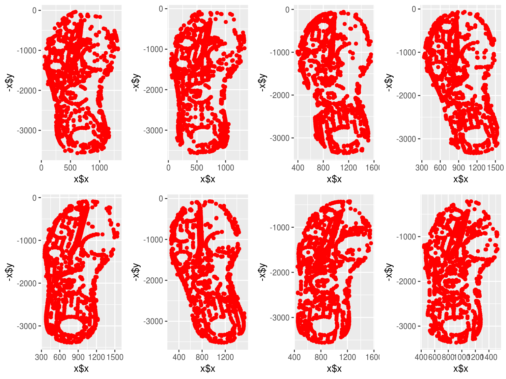
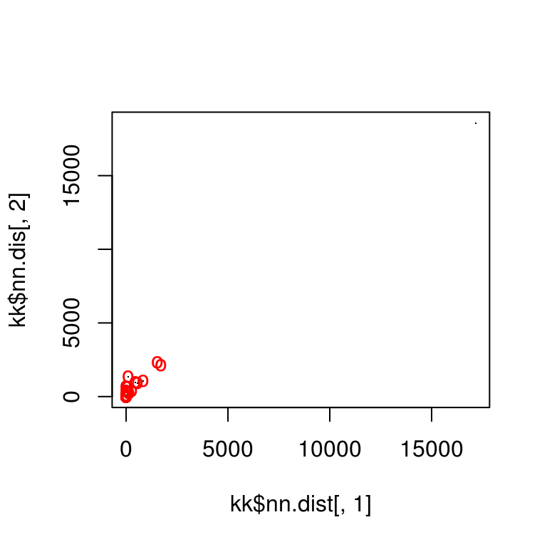
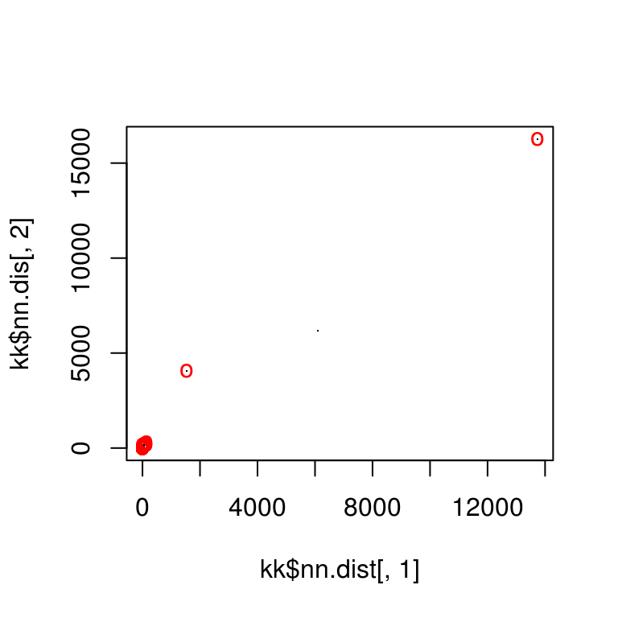
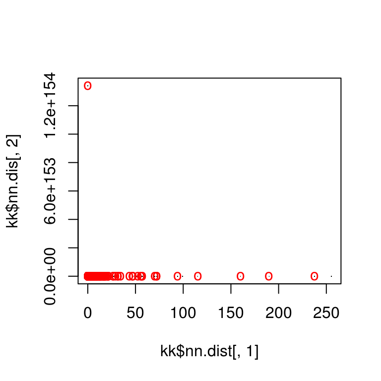
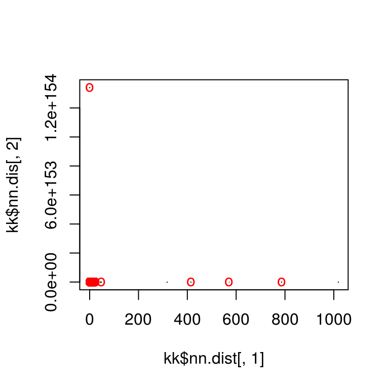
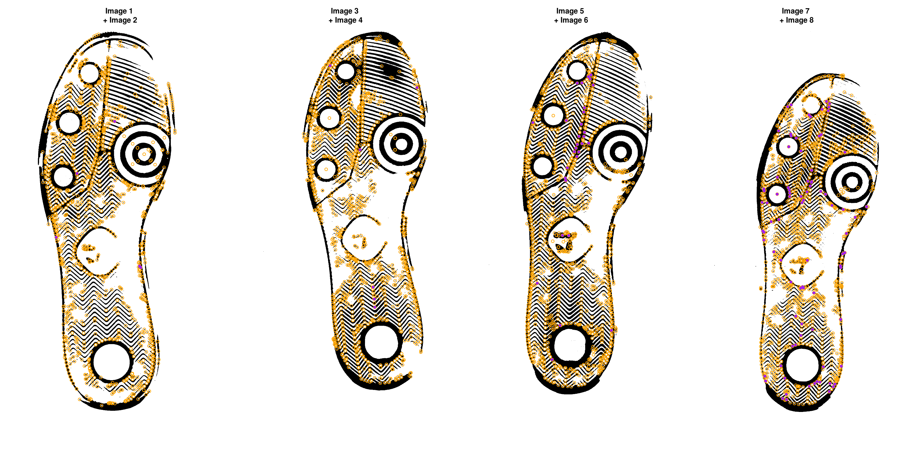
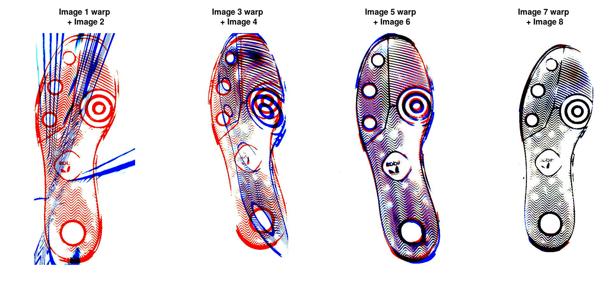

vignettes/shoe-surf-2.Rmd
shoe-surf-2.Rmdimlinks <- system.file(package = "ShoeSampleData", "extdata/") %>%
list.files(full.names = T) %>%
sort()
clean_shoe_img <- function(im) {
img <- im %>%
crop.borders(nPix = 170) %>%
grayscale() %>%
threshold() %>%
clean(5) %>%
autocrop() %>%
pad(20, axes = "xy", val = max(.))
# plot(img)
img
}
imgs_orig <- lapply(imlinks[9:16], load.image) %>% as.imlist()
imgs <- lapply(imgs_orig, clean_shoe_img) %>% as.imlist()Shoeprint images
We need to resize the images so that they are the same size:
imgdims <- sapply(imgs, dim)
canonical_image <- matrix(1, nrow = max(imgdims[1,]), ncol = max(imgdims[2,])) %>%
as.cimg()
imgs <- lapply(imgs, function(.) images_resize(., canonical_image, scale = F)[[1]]) %>% as.imlist()We can then overlay the images to see how far apart they are:
par(mfrow = c(1, 4))
plot(imgs[[1]] + imgs[[2]], main = "Initial\nImages 1 and 2", axes = F)
plot(imgs[[3]] + imgs[[4]], main = "Check In 1\nImages 3 and 4", axes = F)
plot(imgs[[5]] + imgs[[6]], main = "Check In 2\nImages 5 and 6", axes = F)
plot(imgs[[7]] + imgs[[8]], main = "Check In 3\nImages 7 and 8", axes = F)
We’ll align images within timepoint - this removes the variability due to the individual collecting the data as well as the variability due to wear over time.
if (!"image.dlib" %in% installed.packages()) {
devtools::install_github("bnosac/image/image.dlib")
}
library(image.dlib)
# image_surf requires a bmp file...
get_surf <- function(im, n = 500, ...) {
tmpbmp <- tempfile(fileext = ".bmp")
save.image(im, tmpbmp)
image_surf(file = tmpbmp, max_points = n, ...)
}
surfkps <- purrr::map(imgs, get_surf, n = 1500, detection_threshold = 15)
plots <- purrr::map(surfkps, function(x) ggplot2::qplot(x$x, -x$y, colour = I("red")))
gridExtra::grid.arrange(grobs = plots, ncol = 4) ## Step 2: Get Points and Features
Match points are calculated using the K nearest neighbors algorithm, combined with some thresholding by distance.
match_idxs <- list(c(1, 2), c(3, 4), c(5, 6), c(7, 8))
match_points <- purrr::map(match_idxs,
~knn_points(skp_features[[.[1]]], skp_features[[.[2]]],
skp_centers[[.[1]]], skp_centers[[.[2]]],
ratio = .85, show_plot = T))
RANSAC is then used to find points that have similar homography.
par(mfrow = c(1, 4))
for (i in 1:length(match_idxs)) {
idx1 <- match_idxs[[i]][1]
idx2 <- match_idxs[[i]][2]
plot(imgs[[idx1]], main = sprintf("Image %d \n+ Image %d", idx1, idx2), axes = F)
skp_centers[[idx1]] %$% points(mx, my, col = "orange")
points(match_points[[i]]$points_a[ransac_points[[i]]$inliers, ], col = "purple", pch = 16)
}
The homography can be used to warp one image onto the other:
map_fcns <- purrr::map(ransac_points, function(.) map_affine_gen(.$homography))
imgs_warp <- purrr::map2(imgs[c(1, 3, 5, 7)], map_fcns, .f = imwarp, direction = "backward", boundary = "neumann")
imgs_warp <- imgs_warp %>% as.imlist()
imgs_unwarp <- imgs[c(2, 4, 6, 8)]We can then overlay the two images:
blank_channel <- purrr::map2(imgs_warp, imgs_unwarp, ~as.cimg(.x > 0 & .y > 0)) %>% as.imlist()
overlaid_images <- purrr::pmap(list(r = imgs_warp, g = blank_channel, b = imgs_unwarp),
function(r, g, b) imappend(imlist(r, g, b), axis = "c"))
overlaid_images <- as.imlist(overlaid_images)
par(mfrow = c(1, 4))
for (i in 1:4) {
plot(overlaid_images[[i]], main = sprintf("Image %d warp\n + Image %d", match_idxs[[i]][1], match_idxs[[i]][2]), axes = F)
}
Areas that are in the first image only are shown in red; areas in the second image only are shown in blue. Areas in both images are shown in black.